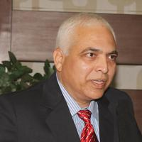

आमचे सामाजिक कार्य


"समुदायांचे सक्षमीकरण, जीवनाचे समृद्धीकरण"
More About Us
भारतीय राज्यघटनेचे शिल्पकार बोधीसत्व प.पू. डॉ. भीमराव रामजी आंबेडकर म्हणजे जागतिक मनाचा मानबिंदू, स्वतंत्र भारताचे पहिले कायदामंत्री, महिलांच्या हक्कासाठी मांडलेले हिंदू कोड बिल पास न झाल्यामुळे आपल्या मंत्री पदाचा राजीनामा दिला. भारतीय अर्थव्यवस्थेच्या विकासाचा पाया घालणारे, भारतामध्ये न्याय, समता, स्वातंत्र्य, बंधुता याचे जाळे विणणारे, संविधानाच्या माध्यमातून तळागातील समाजाला त्याच्या मूलभूत हक्क आणि कर्तव्याचे लोकशाही मार्गाचे भान देणारे, हजारो वर्षांच्या पासून गुलामीचे जीवन जगणाऱ्या विशिष्ट वर्गाला, त्या गुलामीच्या जोखडातून मुक्त करणारे महामानव, समाज उद्धारक देशाच्या राजकारणात, समाजकारणात देखील जेव्हा, जेव्हा आर्थिक समस्या उद्भवली तेव्हा प्रत्येक वेळी स्थिती सक्षमपणे सांभाळून देशाच्या स्थैर्यात महत्त्वाची भूमिका निभावणारे आणि भारताचे जागतिक पातळीवर सर्वसामान्य जनतेचे प्रतिनिधित्व, नेतृत्व करणारे व राष्ट्रीय राजकारणाला नवी दिशा देणारे द्रष्टे नेते.
६ डिसेंबर १९५६ रोजी मा. डॉ. बाबासाहेब आंबेडकरांच्या मृत्यूनंतर (त्यांचे कार्य पूर्णत्वास नेण्यासाठी साहेबांचे अनुयायी सद्गद अंतकरणाने एकत्र आले. म्हणूनच डॉ. आंबेडकरांच्या मृत्यूनंतर ४६ वर्षांनी) आणि २८ डिसेंबर २००२ रोजी मांडवा येथे 'विश्वरत्न फाउंडेशन'ची स्थापना झाली.
विश्वरत्न फाउंडेशन हे धर्मनिरपेक्ष, पक्षनिरपेक्ष सामान्य लोकांनी सर्वसामान्य लोकांसाठी निर्माण केलेले व्यासपीठ आहे. महाराष्ट्रातील सर्वसामान्य, तळीगाळातील माणसाला सतावणा प्रश्नांचा खल करावा आणि त्या चर्चेतून निष्ठावंत कार्य करणारे (कार्यकर्ते) माणूस तयार व्हावे ही फाउंडेशनची भूमिका आहे. या राकट, कणखर दगडांच्या देशाचा स्वाभिमान देशातच नव्हे तर जागतिक पातळीवर सुद्धा अभंग रहावा हीच सर्वसामान्य माणसाची इच्छा आहे. विश्वरत्न फाउंडेशनचा दोन दशकांचा प्रवास हा या आकांक्षाच्या पूर्ततेचा आहे.
या विभागामार्फत शालेय विद्यार्थ्यांच्या व्यक्तिमत्व विकास आणि विविध कलागुणांची तोंडओळख करून देऊन त्यांचे विद्यार्थी जीवन समृद्ध व्हावे या करिता लुंबिनीचा हा अभिनव उपक्रम चालविण्यात येतो. सर्जनशीलतेचा आविष्कार विद्यार्थ्यांसोबत घडवून त्यांच्यातील सुप्त कलागुणांना वाव देण्याचा हा प्रयत्न आहे. लुंबिनीच्या कार्यशाळेत प्रत्येक सत्रात २०० ते २५० च्या आसपास विद्यार्थ्यांचा सहभाग असतो. लुंबिनीची संकल्पना व संयोजिका सौ. दिपाली विवेक मोरे यांची असून यामध्ये सौ. वैशाली सुनिल मोरे, आयु. कोमल श्रीकृष्ण पाखरे सन्माननीय सल्लागार म्हणून काम पाहतात. श्री. मिलिंद श्रीकृष्ण पाखरे हे या कार्यशाळेचे समन्वयक म्हणून काम करत आहेत.
हे पर्यावरण संवर्धन व शिक्षणासाठी उभारलेले व्यासपीठ आहे. मा. विवेक मोरे अभियानाचे निमंत्रक आहेत. हवामान बदल आणि जागतिक तापमान वाढीची समस्या आज संपूर्ण जगाला भेडसावत आहे. त्याच्या दुष्परिणामांना महाराष्ट्राला सुद्धा सामोरे जावे लागणार आहे. म्हणून हवामान बदल आणि जागतिक तापमान वाढीची समस्या नीट समजावून घेण्यासाठी आणि त्याचा एकूणच पर्यावरण व मानवी जीवनावर होणारा परिणाम यावर शालेय विद्यार्थ्यांमध्ये जाणीव जागृती व्हावी या उद्देशाने हवामान बदल विषयक शिक्षण व कृती प्रकल्पांची आखणी करण्यात आली आहे. या प्रकल्पामध्ये विद्यार्थ्यांद्वारे स्थानिक पातळीवर वरील पर्यावरणीय उपाय योजना करण्यासाठी विद्यार्थी, शिक्षक आणि शाळांची तयारी करून घेणे. स्थानिक प्रजातींच्या वनसंपत्तीचे संवर्धन करणे, वीज पाण्याचा वापर योग्य प्रमाणात करणे, त्याचे ऑडिट करणे, देशी बियाण्यांची बँक स्थापन करणे, स्थानिक, बाग, जंगल, तलाव / किनारे अशा नैसर्गिक स्थळांच्या क्षेत्रभेटी आयोजित करणे, अशा विविध कार्यशील उपक्रम वर्षभर राबविण्यात येतात.
सेंद्रिय शेती व सहकार विषयातील तज्ञ, शेतकरी आणि या क्षेत्राशी संबंधित व्यक्तींना एका व्यासपीठावर एकत्र आणून त्यांच्यात साधक बाधक चर्चा घडवून सकारात्मक बदल घडावा या करिता हे व्यासपीठ कार्यरत आहे. चर्चा मेळावे, व्याख्याने या व्यासपीठामार्फत आयोजित केले जातात. धोरणात्मक मुद्यांसोबतच सेंद्रिय शेती व सहकार संबंधी काम करत असताना येणाऱ्या अडचणी यांचा यात समावेश असतो. सेंद्रिय शेती व सहकार व्यासपीठाचे काम विभागीय कार्यालय औरंगाबाद व मुख्य कार्यालय मांडवा येथून चालते. आयु. विवेक मोरे या विभागाचे काम पाहतात. व्यासपीठाला आयु. संतोष लहाने यांचे वेळोवेळी मार्गदर्शन लाभते. दैनंदिन कामकाजात अनिल मोरे, दयानंद मोरे, अविनाश मोरे यांच्या निरीक्षणात सुरू आहे. मुख्य मार्गदर्शक रोहिदास पठ्ठे आहे.
समाजातील गोरगरीब, दिनदुबळे व मागासवर्गीय लोकांना त्यांच्या आर्थिक अडचणींमुळे किंवा मागासलेपणामुळे अन्याय सहन करण्याची वेळ येऊ नये यासाठी उपाय योजावे, अशा प्रकारचे मार्गदर्शन आपल्या राज्यघटनेमध्ये करण्यात आलेले आहे. या तरतुदीला अनुसरून भारतीय संसदेने १९८७ मध्ये विधिसेवा प्राधिकरण अधिनियम अंर्तभूत असलेली मोफत कायदेविषयक सहाय्य व सल्ला योजना राबविण्याचे काम विश्वरत्न फाउंडेशन मार्फत केले जाते. या योजनेची अंमलबजावणी करण्यासाठी फाउंडेशनने विश्वरत्न फाउंडेशन कायदेविषयक सहाय्य व सल्ला फोरम या विभागाची निर्मिती केली आहे. या विभागामध्ये अंदाजे ४० वकील व समाज सेवक काम करत असून ते आपली सेवा या योजनेसाठी देत आहेत. अॅड. डॉ. दयानंद इंगळे, अॅड. ज्योती इंगळे, अॅड. विवेक मोरे.
२१ व्या शतकास सामोरे जाण्यासाठी माहिती तंत्रज्ञान हे अतिशय वेगवान व प्रभावी तंत्रज्ञान साधन उपलब्ध आहे. हे आता सर्वसामान्य झालेले आहे. संगणकाचा वापर सर्वच क्षेत्रात सुरु झालेला आहे. संगणकाच्या प्राथमिक वापरापासून ते इंटरनेट पर्यंतचे शिक्षण आपल्या गरजेप्रमाणे घेणे हे आधुनिक भारतात आवश्यक झाले आहे. नवीन तंत्रज्ञानाचा पूर्ण लाभ मिळविण्यासाठी आवश्यक ते तंत्रज्ञ तयार होणे ही आवश्यक आहे. या दृष्टीने फाउंडेशनचे अध्यक्ष विवेक मोरे यांनी विश्वरत्न फाउंडेशन च्या माध्यमातून "माहिती व तंत्रज्ञान प्रबोधिनी" स्थापन करून नवीन युवक युवतींना संगणक प्रशिक्षणाचा लाभ घेता यावा यासाठी काही अभ्यासक्रम सुरु करावे असा प्रस्ताव मांडला. या प्रबोधिनीचे काम फाउंडेशनचे आयु. कोमल पाखरे सह-संचालक व सौ. दिपाली मोरे मुख्य विपणन अधिकारी म्हणून कुशलतेने पाहत आहेत.दिक्षा इंगळे यांच्या मार्गदर्शनाखाली प्रबोधनाचे काम सुरू आहे.
"रमाई" महिला व्यासपीठाच्या वतीने महिलांची शारीरिक, मानसिक, आर्थिक, सामाजिक, राजकीय विकासाच्या दृष्टिकोनातून वाढ व्हावी, सक्षमता वाढावी यासाठी विविध उपक्रम, विविध कार्यशाळा आणि विकासभिमुख कार्यक्रमांच्या माध्यमातून कार्यशील प्रयत्न केले जातात. संयोजिका सौ. वैशाली मोरे, कार्यकारी संयोजिका सौ. कोमल मोरे, ॲड.ज्योती इंगळे, निर्मला साळवे आणि रेखा लहाने रमाई महिला व्यासपीठाचे काम पाहतात.
युवा अभियान युवकांच्या सर्वांगीण विकासाकरिता प्रयत्नशील आहे. युवकांमध्ये सामाजिक, सांस्कृतिक, आर्थिक आणि राजकीय सजगता आणून त्यांच्यातील नेतृत्व गुण विकसित करण्याकरिता युवा अभियानांतर्गत विविध कार्यक्रम राबविले जातात. त्याच बरोबर विविध सामाजिक समस्यांवर युवा अभियान गेली दोन दशकांपासून कार्यरत आहे. युवा अभियानासोबत जिल्हाभरातून नवनवीन कार्यकर्ते जोडले जात आहेत. युवा अभियानाचे काम संयोजन दयानंद मोरे व समन्वयक - विशाल मोरे सहायक अनिल मोरे हे उत्साहाने करत आहेत.
विश्वरत्न फाउंडेशनच्या अंतर्नाद विभागामार्फत नाट्य, चित्रपट, गायन इ. कार्यक्रम होतात. अंतर्नादची वार्षिक वर्गणी पूर्ण वर्षासाठी १५००/-, वैयक्तिक - १२९९/-, अपंगांसाठी ५००/- भरून अंतर्नादचे सभासद होता येते. अंतर्नादच्या सभासदांना तसेच फाउंडेशनच्या सदस्यांना कार्यक्रमांचा आस्वाद घेता येतो. अंतर्नाद साठी सभासद नोंदणी सुरू आहे. आंतरनिष्ठ संपर्क प्रमुख: दिव्यांश विवेक मोरे.
जगातील ज्ञानामध्ये दरवर्षी भर पडत आहे. ग्रंथ ज्ञान साधने मोठ्या संख्येने प्रसिद्ध होत आहेत. ग्रंथालयातील वाचक वर्गाचे समाधान होण्यासाठी आपण तशा प्रकारच्या ग्रंथालयातून सेवा देत असतो. गेली वीस वर्षात विज्ञान आणि तंत्रज्ञानाने उत्तुंग अशी झेप घेतलेली आहे. या क्षेत्रात लक्षणीय असे परिवर्तन झालेले आहे. सध्याचे युग हे माहिती तंत्रज्ञानाचे आहे. तंत्रज्ञानाच्या झपाट्याने विकास होत आहे. सध्या सर्वच ग्रंथालये व माहिती केंद्रे स्थानिक प्रादेशिक व जागतिक पातळीवर स्थापन झाली आहेत. ती ज्ञान प्रसाराच्या क्षेत्रात महत्वाची भूमिका बजावत आहेत. शास्त्रीय व इतर संशोधनाचा वेगाने विकास होत आहे. त्यासाठी वाचक वर्गाच्या आग्रहास्तव नालंदा ग्रंथालयाची स्थापना करण्यात आली.
वृद्धांसाठी हक्काचे घर "तान्हाई" ... (पूर्ण माहिती समाविष्ट)
विश्वरत्न फाउंडेशन २००२ पासून गुणवत्तापूर्ण शिक्षणाकरिता प्रयत्नशील आहे. विविध महत्त्वाच्या विषयावर परिषद, कार्यशाळा, चर्चासत्रे, शिक्षण विषयक पुस्तकांचे प्रकाशन, उत्कृष्ट शैक्षणिक प्रयोग पुरस्कार, शिक्षक साहित्य संमेलन, राष्ट्रीय शिक्षण दिनाचे आयोजन, शैक्षणिक दृष्ट्या महत्त्वाच्या विषयावर होणारे शिक्षण कट्टा वरील चर्चा, दत्तक शाळा, शालेय शिक्षणाचा दर्जा उंचावण्यासाठी प्रशिक्षण अशा विविध पातळीवर हा मंच कार्यरत आहे. शिक्षण क्षेत्रात कार्यरत असणारे शिक्षक, संस्थाचालक, शासकीय अधिकारी, अभ्यासक, माध्यम प्रतिनिधी, पालक तसेच विद्यार्थी यांनी एकत्र येऊन साधक बाधक चर्चा करावी याकरिता विकास मंचाच्या स्थापनेपासून डॉ. डी. के. खरात, डॉ. माधवी खरात, अतुल भोसेकर, डॉ. दयानंद इंगळे यांचे मार्गदर्शन वेळोवेळी लाभत आहे. सौ. दिपाली मोरे फुले शाहू आंबेडकर शिक्षण विकास मंचाच्या मुख्य संयोजिका म्हणून कार्यरत आहेत. सोबत सौ. कोमल मोरे काम पाहतात.
जिल्ह्यातील अपंगांच्या विविध समस्या संवाद व समन्वयाच्या माध्यमातून सोडविण्यासाठी अपंग हक्क विकास मंचाची निर्मिती केली गेली. मंचाचे निमंत्रक श्री मिलिंद पाखरे, संयोजक - विवेक मोरे, संतोष लहाने हे काम पाहतात. या मंचाच्या माध्यमातून जिल्ह्यामधील अपंगांच्या तपासणी शिबिरांचे आयोजन करून सर्व प्रवर्गमधील अपंगांना त्यांच्या आवश्यकतेनुसार कृत्रिम अवयव व साधनांसाठीचे मोजमाप घेऊन त्यांना कृत्रिम अवयव व साधने मोफत उपलब्ध करून देण्यासाठी लागेल ती मदत केली जाते. तसेच या मंचाच्या मार्फत प्रत्येक अपंगाला त्यांच्या अपंगत्वानुसार योग्य ती माहिती पुरवली जाते. तसेच अपंगांना लागेल ती मदत करण्याचा मंचाचा प्रयत्न असतो. - विभागीय केंद्र :- उतरानगरी औरंगाबाद - मुख्य कार्यालय :- मांडवा ता. लोणार, जि. बुलढाणा-

डॉ. डी. के. खरात

डॉ. डी. आर. इंगळे

श्री. अतुल भोसेकर

डॉ. माधवी खरात

ॲड. ज्योती इंगळे
मुख्य कार्यालय: मांडवा, ता. लोणार, जि. बुलढाणा
विभागीय केंद्र: उस्मानपुरा, औरंगाबाद
| अ. क्र. | सभासदांचे पूर्ण नाव | हुद्दा / पद |
|---|---|---|
| 1 | श्री. विवेक अंबादास मोरे | अध्यक्ष |
| 2 | श्री. कोमल श्रीकृष्ण पाखरे | उपाध्यक्ष |
| 3 | सौ. दिपाली विवेक मोरे | सचिव |
| 4 | सौ. बेबीताई श्रीकृष्ण पाखरे | सहसचिव |
| 5 | श्री. मिलिंद श्रीकृष्ण पाखरे | कोषाध्यक्ष |
| 6 | श्रीमती. कौशल्य अंबादास मोरे | सदस्य |
| 7 | सौ. वैशाली सुनिल मोरे | सदस्य |